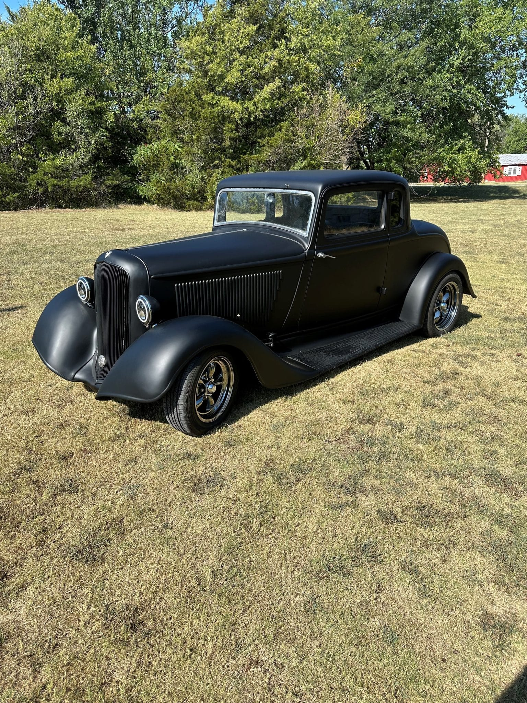

A Plymouth, criada pela Chrysler em 1928, introduziu modelos coupe para competir no mercado de baixo custo com Ford e Chevrolet.
Destacaram-se o Barracuda (1964), um "pony car" clássico com motor V8, e o raro Super Coupe 1978. A marca focou em estilo, potência e valor até seu encerramento em 2001.
